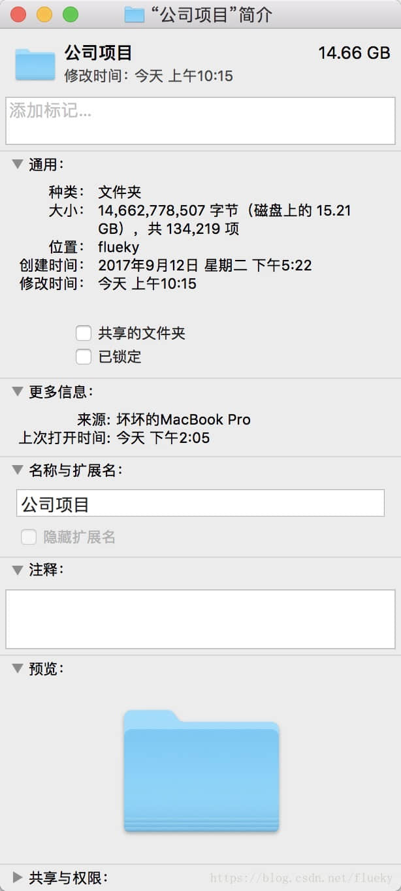
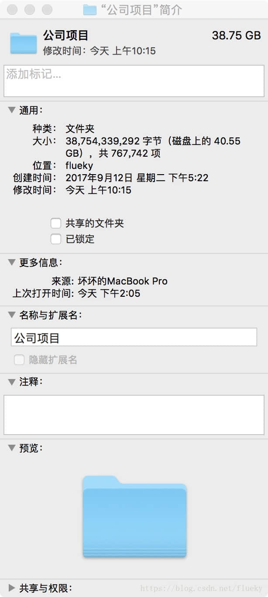

<!DOCTYPE html><html lang="en" data-theme="light"><head><meta charset="UTF-8"><meta http-equiv="X-UA-Compatible" content="IE=edge"><meta name="viewport" content="width=device-width, initial-scale=1.0,viewport-fit=cover"><title>用Shell批量删除AndroidStudio build目录 | Flueky 技术小站</title><meta name="author" content="Flueky Zuo"><meta name="copyright" content="Flueky Zuo"><meta name="format-detection" content="telephone=no"><meta name="theme-color" content="#ffffff"><meta name="description" content="多数Android程序猿都有一个痛，使用AndroidStudio开发安卓项目时，build目录占用太多存储空间。在没有版本控制工具的情况下，一些没有经验的Android开发者会将自己的程序直接打包发送给别人。这样的代码包，少则几十兆，多则数百兆，其中多数都是build目录下的文件。（使用eclipse开发时，bin 目录和gen目录与之类似。）">
<meta property="og:type" content="article">
<meta property="og:title" content="用Shell批量删除AndroidStudio build目录">
<meta property="og:url" content="https://flueky.github.io/236/index.html">
<meta property="og:site_name" content="Flueky 技术小站">
<meta property="og:description" content="多数Android程序猿都有一个痛，使用AndroidStudio开发安卓项目时，build目录占用太多存储空间。在没有版本控制工具的情况下，一些没有经验的Android开发者会将自己的程序直接打包发送给别人。这样的代码包，少则几十兆，多则数百兆，其中多数都是build目录下的文件。（使用eclipse开发时，bin 目录和gen目录与之类似。）">
<meta property="og:locale" content="en_US">
<meta property="og:image" content="https://i.loli.net/2021/02/24/5O1day2nriDzjSu.png">
<meta property="article:published_time" content="2018-04-12T08:25:37.000Z">
<meta property="article:modified_time" content="2024-09-08T10:33:04.560Z">
<meta property="article:author" content="Flueky Zuo">
<meta name="twitter:card" content="summary">
<meta name="twitter:image" content="https://i.loli.net/2021/02/24/5O1day2nriDzjSu.png"><link rel="shortcut icon" href="/img/favicon.png"><link rel="canonical" href="https://flueky.github.io/236/index.html"><link rel="preconnect" href="//cdn.jsdelivr.net"/><link rel="preconnect" href="//busuanzi.ibruce.info"/><link rel="stylesheet" href="/css/index.css?v=4.13.0"><link rel="stylesheet" href="https://cdn.jsdelivr.net/npm/@fortawesome/fontawesome-free@6.5.1/css/all.min.css"><link rel="stylesheet" href="https://cdn.jsdelivr.net/npm/@fancyapps/ui@5.0.33/dist/fancybox/fancybox.min.css" media="print" onload="this.media='all'"><script>const GLOBAL_CONFIG = {
  root: '/',
  algolia: undefined,
  localSearch: undefined,
  translate: undefined,
  noticeOutdate: undefined,
  highlight: {"plugin":"highlight.js","highlightCopy":true,"highlightLang":true,"highlightHeightLimit":false},
  copy: {
    success: 'Copy Successful',
    error: 'Copy Error',
    noSupport: 'Browser Not Supported'
  },
  relativeDate: {
    homepage: false,
    post: false
  },
  runtime: '',
  dateSuffix: {
    just: 'Just now',
    min: 'minutes ago',
    hour: 'hours ago',
    day: 'days ago',
    month: 'months ago'
  },
  copyright: undefined,
  lightbox: 'fancybox',
  Snackbar: undefined,
  infinitegrid: {
    js: 'https://cdn.jsdelivr.net/npm/@egjs/infinitegrid@4.11.1/dist/infinitegrid.min.js',
    buttonText: 'Load More'
  },
  isPhotoFigcaption: false,
  islazyload: false,
  isAnchor: false,
  percent: {
    toc: true,
    rightside: false,
  },
  autoDarkmode: false
}</script><script id="config-diff">var GLOBAL_CONFIG_SITE = {
  title: '用Shell批量删除AndroidStudio build目录',
  isPost: true,
  isHome: false,
  isHighlightShrink: false,
  isToc: true,
  postUpdate: '2024-09-08 18:33:04'
}</script><script>(win=>{
      win.saveToLocal = {
        set: (key, value, ttl) => {
          if (ttl === 0) return
          const now = Date.now()
          const expiry = now + ttl * 86400000
          const item = {
            value,
            expiry
          }
          localStorage.setItem(key, JSON.stringify(item))
        },
      
        get: key => {
          const itemStr = localStorage.getItem(key)
      
          if (!itemStr) {
            return undefined
          }
          const item = JSON.parse(itemStr)
          const now = Date.now()
      
          if (now > item.expiry) {
            localStorage.removeItem(key)
            return undefined
          }
          return item.value
        }
      }
    
      win.getScript = (url, attr = {}) => new Promise((resolve, reject) => {
        const script = document.createElement('script')
        script.src = url
        script.async = true
        script.onerror = reject
        script.onload = script.onreadystatechange = function() {
          const loadState = this.readyState
          if (loadState && loadState !== 'loaded' && loadState !== 'complete') return
          script.onload = script.onreadystatechange = null
          resolve()
        }

        Object.keys(attr).forEach(key => {
          script.setAttribute(key, attr[key])
        })

        document.head.appendChild(script)
      })
    
      win.getCSS = (url, id = false) => new Promise((resolve, reject) => {
        const link = document.createElement('link')
        link.rel = 'stylesheet'
        link.href = url
        if (id) link.id = id
        link.onerror = reject
        link.onload = link.onreadystatechange = function() {
          const loadState = this.readyState
          if (loadState && loadState !== 'loaded' && loadState !== 'complete') return
          link.onload = link.onreadystatechange = null
          resolve()
        }
        document.head.appendChild(link)
      })
    
      win.activateDarkMode = () => {
        document.documentElement.setAttribute('data-theme', 'dark')
        if (document.querySelector('meta[name="theme-color"]') !== null) {
          document.querySelector('meta[name="theme-color"]').setAttribute('content', '#0d0d0d')
        }
      }
      win.activateLightMode = () => {
        document.documentElement.setAttribute('data-theme', 'light')
        if (document.querySelector('meta[name="theme-color"]') !== null) {
          document.querySelector('meta[name="theme-color"]').setAttribute('content', '#ffffff')
        }
      }
      const t = saveToLocal.get('theme')
    
        if (t === 'dark') activateDarkMode()
        else if (t === 'light') activateLightMode()
      
      const asideStatus = saveToLocal.get('aside-status')
      if (asideStatus !== undefined) {
        if (asideStatus === 'hide') {
          document.documentElement.classList.add('hide-aside')
        } else {
          document.documentElement.classList.remove('hide-aside')
        }
      }
    
      const detectApple = () => {
        if(/iPad|iPhone|iPod|Macintosh/.test(navigator.userAgent)){
          document.documentElement.classList.add('apple')
        }
      }
      detectApple()
    })(window)</script><meta name="generator" content="Hexo 7.3.0"></head><body><div id="sidebar"><div id="menu-mask"></div><div id="sidebar-menus"><div class="avatar-img is-center"></div><div class="sidebar-site-data site-data is-center"><a href="/archives/"><div class="headline">Articles</div><div class="length-num">71</div></a><a href="/tags/"><div class="headline">Tags</div><div class="length-num">32</div></a><a href="/categories/"><div class="headline">Categories</div><div class="length-num">13</div></a></div><hr class="custom-hr"/><div class="menus_items"><div class="menus_item"><a class="site-page" href="/"><i class="fa-fw fas fa-home"></i><span> Home</span></a></div><div class="menus_item"><a class="site-page" href="/archives/"><i class="fa-fw fas fa-archive"></i><span> Archives</span></a></div><div class="menus_item"><a class="site-page" href="/tags/"><i class="fa-fw fas fa-tags"></i><span> Tags</span></a></div><div class="menus_item"><a class="site-page" href="/categories/"><i class="fa-fw fas fa-folder-open"></i><span> Categories</span></a></div></div></div></div><div class="post" id="body-wrap"><header class="post-bg" id="page-header"><nav id="nav"><span id="blog-info"><a href="/" title="Flueky 技术小站"><span class="site-name">Flueky 技术小站</span></a></span><div id="menus"><div class="menus_items"><div class="menus_item"><a class="site-page" href="/"><i class="fa-fw fas fa-home"></i><span> Home</span></a></div><div class="menus_item"><a class="site-page" href="/archives/"><i class="fa-fw fas fa-archive"></i><span> Archives</span></a></div><div class="menus_item"><a class="site-page" href="/tags/"><i class="fa-fw fas fa-tags"></i><span> Tags</span></a></div><div class="menus_item"><a class="site-page" href="/categories/"><i class="fa-fw fas fa-folder-open"></i><span> Categories</span></a></div></div><div id="toggle-menu"><a class="site-page" href="javascript:void(0);"><i class="fas fa-bars fa-fw"></i></a></div></div></nav><div id="post-info"><h1 class="post-title">用Shell批量删除AndroidStudio build目录</h1><div id="post-meta"><div class="meta-firstline"><span class="post-meta-date"><i class="far fa-calendar-alt fa-fw post-meta-icon"></i><span class="post-meta-label">Created</span><time class="post-meta-date-created" datetime="2018-04-12T08:25:37.000Z" title="Created 2018-04-12 16:25:37">2018-04-12</time><span class="post-meta-separator">|</span><i class="fas fa-history fa-fw post-meta-icon"></i><span class="post-meta-label">Updated</span><time class="post-meta-date-updated" datetime="2024-09-08T10:33:04.560Z" title="Updated 2024-09-08 18:33:04">2024-09-08</time></span><span class="post-meta-categories"><span class="post-meta-separator">|</span><i class="fas fa-inbox fa-fw post-meta-icon"></i><a class="post-meta-categories" href="/categories/Shell/">Shell</a></span></div><div class="meta-secondline"><span class="post-meta-separator">|</span><span class="post-meta-pv-cv" id="" data-flag-title="用Shell批量删除AndroidStudio build目录"><i class="far fa-eye fa-fw post-meta-icon"></i><span class="post-meta-label">Post Views:</span><span id="busuanzi_value_page_pv"><i class="fa-solid fa-spinner fa-spin"></i></span></span></div></div></div></header><main class="layout" id="content-inner"><div id="post"><article class="post-content" id="article-container"><p>多数Android程序猿都有一个痛，使用AndroidStudio开发安卓项目时，build目录占用太多存储空间。在没有版本控制工具的情况下，一些没有经验的Android开发者会将自己的程序直接打包发送给别人。这样的代码包，少则几十兆，多则数百兆，其中多数都是build目录下的文件。（<strong>使用eclipse开发时，bin 目录和gen目录与之类似。</strong>）</p>
<span id="more"></span>

<p>在AS工程中，至少有一个项目级的build目录，每个module 都有一个自己的build目录。也许你们觉得发送代码之前，仔细删除几个build目录，很简便的申请，没必要去为此大费周章的去写什么脚本工具。但是楼主由于工作性质，经常会有同事发送代码过来、和发送代码给同事的情况，以及电脑里存储了公司几十个项目的源码，偶尔改下bug，编译一次。这样才有了写脚本的念头。</p>
<blockquote>
<p>下图是删除build前后的对比，节省了24G的存储空间。</p>
</blockquote>




<h2 id="1-Shell-脚本"><a href="#1-Shell-脚本" class="headerlink" title="1 Shell 脚本"></a>1 Shell 脚本</h2><h3 id="1-1-遍历目录"><a href="#1-1-遍历目录" class="headerlink" title="1.1 遍历目录"></a>1.1 遍历目录</h3><p>遍历文件和文件夹，是一个递归的过程，因此声明一个函数<code>readDir</code>递归调用。使用命令<code>ls 路径</code> 遍历路径下全部文件（夹）,使用<code>for</code>循环获取到全部输出，判断是文件夹，先输出文件夹路径再进行递归，判断是文件，直接进行输出。</p>
<h4 id="1-1-1-脚本内容"><a href="#1-1-1-脚本内容" class="headerlink" title="1.1.1 脚本内容"></a>1.1.1 脚本内容</h4><figure class="highlight shell"><table><tr><td class="gutter"><pre><span class="line">1</span><br><span class="line">2</span><br><span class="line">3</span><br><span class="line">4</span><br><span class="line">5</span><br><span class="line">6</span><br><span class="line">7</span><br><span class="line">8</span><br><span class="line">9</span><br><span class="line">10</span><br><span class="line">11</span><br><span class="line">12</span><br><span class="line">13</span><br><span class="line">14</span><br><span class="line">15</span><br></pre></td><td class="code"><pre><span class="line"><span class="meta prompt_">#</span><span class="language-bash">!/bin/bash</span></span><br><span class="line">function readDir()&#123;</span><br><span class="line">    for element in `ls $1` # 遍历 ls 输出</span><br><span class="line">    do</span><br><span class="line">        dir_or_file=$1&quot;/&quot;$element # 拼接完整地址</span><br><span class="line">        if [ -d $dir_or_file ] # 判断是文件夹</span><br><span class="line">        then</span><br><span class="line">            echo &quot;$dir_or_file&quot; # 输出文件夹路径</span><br><span class="line">            readDir $dir_or_file # 遍历文件夹</span><br><span class="line">        else</span><br><span class="line">            echo &quot;$dir_or_file&quot; # 输出文件路径</span><br><span class="line">        fi</span><br><span class="line">    done</span><br><span class="line">&#125;</span><br><span class="line">readDir $1</span><br></pre></td></tr></table></figure>

<blockquote>
<p>此处有两个变量 <code>$1</code>。<code>for</code>循环中的 <code>$1</code> 指 <code>readDir</code>函数接收的第一个参数。<code>readDir $1</code>表示在终端执行脚本文件时，接收的第一个参数。其中<code>$0</code>表示脚本文件的路径。</p>
</blockquote>
<figure class="highlight shell"><table><tr><td class="gutter"><pre><span class="line">1</span><br><span class="line">2</span><br><span class="line">3</span><br></pre></td><td class="code"><pre><span class="line">echo $0</span><br><span class="line">echo $1</span><br><span class="line">echo $2</span><br></pre></td></tr></table></figure>

<p>上述代码输出：</p>
<pre><code>del-build 参数1 参数2
/Volumes/flueky/shell/del-build
参数1
参数2
</code></pre>
<h4 id="1-1-2-脚本测试"><a href="#1-1-2-脚本测试" class="headerlink" title="1.1.2 脚本测试"></a>1.1.2 脚本测试</h4><pre><code>del-build /Volumes/flueky/GitHub/flueky/blog/shell删除build目录
/Volumes/flueky/GitHub/flueky/blog/shell删除build目录/blog.md
/Volumes/flueky/GitHub/flueky/blog/shell删除build目录/build
/Volumes/flueky/GitHub/flueky/blog/shell删除build目录/build/test
/Volumes/flueky/GitHub/flueky/blog/shell删除build目录/build/test1
/Volumes/flueky/GitHub/flueky/blog/shell删除build目录/pic
/Volumes/flueky/GitHub/flueky/blog/shell删除build目录/pic/52BAADAA2A0974465F2A4873DC306D9B.jpg
/Volumes/flueky/GitHub/flueky/blog/shell删除build目录/pic/B18656263D5D14EE02C0B47A7C707BEF.jpg
/Volumes/flueky/GitHub/flueky/blog/shell删除build目录/test
/Volumes/flueky/GitHub/flueky/blog/shell删除build目录/test/build
/Volumes/flueky/GitHub/flueky/blog/shell删除build目录/test/build/heheda
/Volumes/flueky/GitHub/flueky/blog/shell删除build目录/test/heheda
</code></pre>
<blockquote>
<p>del-build 为脚本文件名，由于楼主直接将脚本所在的shell目录添加到环境变量中，因此可以直接在shell目录外执行此脚本文件。</p>
</blockquote>
<p><strong>新建脚本文件后，需要使用命令 <code>chmod a+x 文件名</code> 添加文件的执行权限。</strong></p>
<h3 id="1-2-删除build目录"><a href="#1-2-删除build目录" class="headerlink" title="1.2 删除build目录"></a>1.2 删除build目录</h3><p>弄清楚遍历的脚本后，可以在此基础上删除指定文件（夹）。由于<code>build</code>是文件夹，因此只需要在<code>if [ -d $dir_or_file ]</code>中，添加删除操作。</p>
<h4 id="1-2-1-脚本内容"><a href="#1-2-1-脚本内容" class="headerlink" title="1.2.1 脚本内容"></a>1.2.1 脚本内容</h4><figure class="highlight shell"><table><tr><td class="gutter"><pre><span class="line">1</span><br><span class="line">2</span><br><span class="line">3</span><br><span class="line">4</span><br><span class="line">5</span><br><span class="line">6</span><br><span class="line">7</span><br><span class="line">8</span><br><span class="line">9</span><br><span class="line">10</span><br><span class="line">11</span><br></pre></td><td class="code"><pre><span class="line">dir_or_file=$1&quot;/&quot;$element</span><br><span class="line">if [ -d $dir_or_file ]</span><br><span class="line">then</span><br><span class="line">    if [ $element = &quot;build&quot; ] # 判断文件夹名是build</span><br><span class="line">    then</span><br><span class="line">        echo &quot;$dir_or_file&quot; # 输出文件夹路径</span><br><span class="line">        rm -rfv $dir_or_file # 删除文件夹</span><br><span class="line">    else</span><br><span class="line">        readDir $dir_or_file # 遍历文件夹</span><br><span class="line">    fi</span><br><span class="line">fi</span><br></pre></td></tr></table></figure>

<blockquote>
<p><code>$element</code> 是 <code>ls</code>命令输出的文件名，需要和<code>$1</code>拼接形成完整的路径。在<code>dir_or_file</code>是文件夹的前提下，判断文件名是否是<code>build</code>，再进行删除和遍历操作。</p>
</blockquote>
<h4 id="1-2-2-脚本测试"><a href="#1-2-2-脚本测试" class="headerlink" title="1.2.2 脚本测试"></a>1.2.2 脚本测试</h4><pre><code>del-build /Volumes/flueky/GitHub/flueky/blog/shell删除build目录
/Volumes/flueky/GitHub/flueky/blog/shell删除build目录/build
/Volumes/flueky/GitHub/flueky/blog/shell删除build目录/build/test
/Volumes/flueky/GitHub/flueky/blog/shell删除build目录/build/test1
/Volumes/flueky/GitHub/flueky/blog/shell删除build目录/build
/Volumes/flueky/GitHub/flueky/blog/shell删除build目录/test/build
/Volumes/flueky/GitHub/flueky/blog/shell删除build目录/test/build/heheda
/Volumes/flueky/GitHub/flueky/blog/shell删除build目录/test/build
</code></pre>
<h2 id="2-总结"><a href="#2-总结" class="headerlink" title="2 总结"></a>2 总结</h2><p>完整脚本内容如下:</p>
<figure class="highlight shell"><table><tr><td class="gutter"><pre><span class="line">1</span><br><span class="line">2</span><br><span class="line">3</span><br><span class="line">4</span><br><span class="line">5</span><br><span class="line">6</span><br><span class="line">7</span><br><span class="line">8</span><br><span class="line">9</span><br><span class="line">10</span><br><span class="line">11</span><br><span class="line">12</span><br><span class="line">13</span><br><span class="line">14</span><br><span class="line">15</span><br><span class="line">16</span><br><span class="line">17</span><br><span class="line">18</span><br></pre></td><td class="code"><pre><span class="line"><span class="meta prompt_">#</span><span class="language-bash">!/bin/bash</span></span><br><span class="line">function readDir()&#123;</span><br><span class="line">    for element in `ls $1`</span><br><span class="line">    do</span><br><span class="line">        dir_or_file=$1&quot;/&quot;$element</span><br><span class="line">        if [ -d $dir_or_file ]</span><br><span class="line">        then</span><br><span class="line">            if [ $element = &quot;build&quot; ]</span><br><span class="line">            then</span><br><span class="line">                echo &quot;$dir_or_file&quot;</span><br><span class="line">                rm -rfv $dir_or_file</span><br><span class="line">            else</span><br><span class="line">                readDir $dir_or_file</span><br><span class="line">            fi</span><br><span class="line">        fi</span><br><span class="line">    done</span><br><span class="line">&#125;</span><br><span class="line">readDir $1</span><br></pre></td></tr></table></figure>

<blockquote>
<p>至此一个简单的批操作脚本已经完成。可以将<code>&quot;build&quot;</code> 替换成<code>$2</code>，在执行 del-build 脚本时，动态指定需要删除的文件夹。</p>
</blockquote>
<p><strong>觉得有用？那打赏一个呗。[去打赏](&#x2F;donate&#x2F;)</strong></p>
</article><div class="post-copyright"><div class="post-copyright__author"><span class="post-copyright-meta"><i class="fas fa-circle-user fa-fw"></i>Author: </span><span class="post-copyright-info"><a href="https://flueky.github.io">Flueky Zuo</a></span></div><div class="post-copyright__type"><span class="post-copyright-meta"><i class="fas fa-square-arrow-up-right fa-fw"></i>Link: </span><span class="post-copyright-info"><a href="https://flueky.github.io/236/">https://flueky.github.io/236/</a></span></div><div class="post-copyright__notice"><span class="post-copyright-meta"><i class="fas fa-circle-exclamation fa-fw"></i>Copyright Notice: </span><span class="post-copyright-info">All articles in this blog are licensed under <a target="_blank" rel="noopener" href="https://creativecommons.org/licenses/by-nc-sa/4.0/">CC BY-NC-SA 4.0</a> unless stating additionally.</span></div></div><div class="tag_share"><div class="post-meta__tag-list"></div><div class="post_share"><div class="social-share" data-image="https://i.loli.net/2021/02/24/5O1day2nriDzjSu.png" data-sites="facebook,twitter,wechat,weibo,qq"></div><link rel="stylesheet" href="https://cdn.jsdelivr.net/npm/butterfly-extsrc@1.1.3/sharejs/dist/css/share.min.css" media="print" onload="this.media='all'"><script src="https://cdn.jsdelivr.net/npm/butterfly-extsrc@1.1.3/sharejs/dist/js/social-share.min.js" defer></script></div></div><nav class="pagination-post" id="pagination"><div class="prev-post pull-left"><a href="/237/" title="自定义Android键盘"><div class="cover" style="background: var(--default-bg-color)"></div><div class="pagination-info"><div class="label">Previous</div><div class="prev_info">自定义Android键盘</div></div></a></div><div class="next-post pull-right"><a href="/235/" title="仿QQ空间的透明标题头"><div class="cover" style="background: var(--default-bg-color)"></div><div class="pagination-info"><div class="label">Next</div><div class="next_info">仿QQ空间的透明标题头</div></div></a></div></nav></div><div class="aside-content" id="aside-content"><div class="card-widget card-info"><div class="is-center"><div class="avatar-img"></div><div class="author-info__name">Flueky Zuo</div><div class="author-info__description"></div></div><div class="card-info-data site-data is-center"><a href="/archives/"><div class="headline">Articles</div><div class="length-num">71</div></a><a href="/tags/"><div class="headline">Tags</div><div class="length-num">32</div></a><a href="/categories/"><div class="headline">Categories</div><div class="length-num">13</div></a></div><a id="card-info-btn" target="_blank" rel="noopener" href="https://github.com/flueky"><i class="fab fa-github"></i><span>Follow Me</span></a></div><div class="card-widget card-announcement"><div class="item-headline"><i class="fas fa-bullhorn fa-shake"></i><span>Announcement</span></div><div class="announcement_content">Android 程序猿秘籍</div></div><div class="sticky_layout"><div class="card-widget" id="card-toc"><div class="item-headline"><i class="fas fa-stream"></i><span>Contents</span><span class="toc-percentage"></span></div><div class="toc-content"><ol class="toc"><li class="toc-item toc-level-2"><a class="toc-link" href="#1-Shell-%E8%84%9A%E6%9C%AC"><span class="toc-number">1.</span> <span class="toc-text">1 Shell 脚本</span></a><ol class="toc-child"><li class="toc-item toc-level-3"><a class="toc-link" href="#1-1-%E9%81%8D%E5%8E%86%E7%9B%AE%E5%BD%95"><span class="toc-number">1.1.</span> <span class="toc-text">1.1 遍历目录</span></a><ol class="toc-child"><li class="toc-item toc-level-4"><a class="toc-link" href="#1-1-1-%E8%84%9A%E6%9C%AC%E5%86%85%E5%AE%B9"><span class="toc-number">1.1.1.</span> <span class="toc-text">1.1.1 脚本内容</span></a></li><li class="toc-item toc-level-4"><a class="toc-link" href="#1-1-2-%E8%84%9A%E6%9C%AC%E6%B5%8B%E8%AF%95"><span class="toc-number">1.1.2.</span> <span class="toc-text">1.1.2 脚本测试</span></a></li></ol></li><li class="toc-item toc-level-3"><a class="toc-link" href="#1-2-%E5%88%A0%E9%99%A4build%E7%9B%AE%E5%BD%95"><span class="toc-number">1.2.</span> <span class="toc-text">1.2 删除build目录</span></a><ol class="toc-child"><li class="toc-item toc-level-4"><a class="toc-link" href="#1-2-1-%E8%84%9A%E6%9C%AC%E5%86%85%E5%AE%B9"><span class="toc-number">1.2.1.</span> <span class="toc-text">1.2.1 脚本内容</span></a></li><li class="toc-item toc-level-4"><a class="toc-link" href="#1-2-2-%E8%84%9A%E6%9C%AC%E6%B5%8B%E8%AF%95"><span class="toc-number">1.2.2.</span> <span class="toc-text">1.2.2 脚本测试</span></a></li></ol></li></ol></li><li class="toc-item toc-level-2"><a class="toc-link" href="#2-%E6%80%BB%E7%BB%93"><span class="toc-number">2.</span> <span class="toc-text">2 总结</span></a></li></ol></div></div><div class="card-widget card-recent-post"><div class="item-headline"><i class="fas fa-history"></i><span>Recent Post</span></div><div class="aside-list"><div class="aside-list-item no-cover"><div class="content"><a class="title" href="/105/" title="Arch 编译 Android 11 源码">Arch 编译 Android 11 源码</a><time datetime="2021-01-24T10:05:38.000Z" title="Created 2021-01-24 18:05:38">2021-01-24</time></div></div><div class="aside-list-item no-cover"><div class="content"><a class="title" href="/104/" title="Arch 定制化安装与美化">Arch 定制化安装与美化</a><time datetime="2021-01-23T00:05:38.000Z" title="Created 2021-01-23 08:05:38">2021-01-23</time></div></div><div class="aside-list-item no-cover"><div class="content"><a class="title" href="/103/" title="Arch 安装教程">Arch 安装教程</a><time datetime="2021-01-22T10:05:38.000Z" title="Created 2021-01-22 18:05:38">2021-01-22</time></div></div><div class="aside-list-item no-cover"><div class="content"><a class="title" href="/030/" title="重新认识 Android 图片适配">重新认识 Android 图片适配</a><time datetime="2019-11-29T05:27:09.000Z" title="Created 2019-11-29 13:27:09">2019-11-29</time></div></div><div class="aside-list-item no-cover"><div class="content"><a class="title" href="/029/" title="Android 线程间通信">Android 线程间通信</a><time datetime="2019-11-16T08:59:27.000Z" title="Created 2019-11-16 16:59:27">2019-11-16</time></div></div></div></div></div></div></main><footer id="footer"><div id="footer-wrap"><div class="copyright">&copy;2014 - 2024 By Flueky Zuo</div><div class="framework-info"><span>Framework </span><a target="_blank" rel="noopener" href="https://hexo.io">Hexo</a><span class="footer-separator">|</span><span>Theme </span><a target="_blank" rel="noopener" href="https://github.com/jerryc127/hexo-theme-butterfly">Butterfly</a></div></div></footer></div><div id="rightside"><div id="rightside-config-hide"><button id="readmode" type="button" title="Read Mode"><i class="fas fa-book-open"></i></button><button id="darkmode" type="button" title="Toggle Between Light And Dark Mode"><i class="fas fa-adjust"></i></button><button id="hide-aside-btn" type="button" title="Toggle between Single-column and Double-column"><i class="fas fa-arrows-alt-h"></i></button></div><div id="rightside-config-show"><button id="rightside-config" type="button" title="Setting"><i class="fas fa-cog fa-spin"></i></button><button class="close" id="mobile-toc-button" type="button" title="Table Of Contents"><i class="fas fa-list-ul"></i></button><button id="go-up" type="button" title="Back To Top"><span class="scroll-percent"></span><i class="fas fa-arrow-up"></i></button></div></div><div><script src="/js/utils.js?v=4.13.0"></script><script src="/js/main.js?v=4.13.0"></script><script src="https://cdn.jsdelivr.net/npm/@fancyapps/ui@5.0.33/dist/fancybox/fancybox.umd.min.js"></script><div class="js-pjax"></div><script async data-pjax src="//busuanzi.ibruce.info/busuanzi/2.3/busuanzi.pure.mini.js"></script></div></body></html>